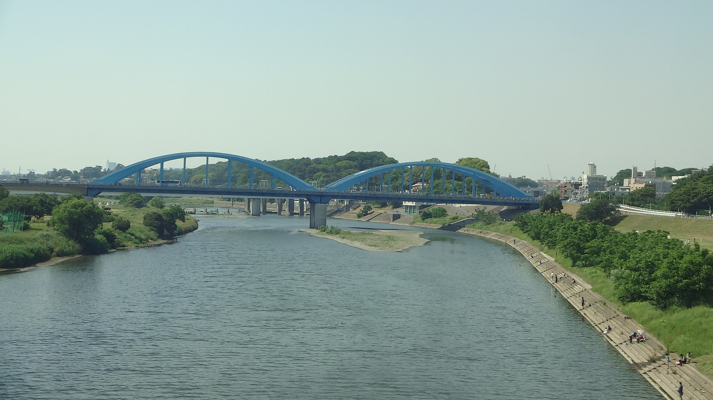

- 지역
- 시나가와 → 신요코하마, 다마강 부근
- 좌석 쪽
- E석 · 신오사카 방향 오른쪽, 도쿄 방향 왼쪽
- 보이는 시간
- 노조미 열차로 도쿄 출발 후 약 13분
- 볼 수 있는 시간
- 몇 초Nozomi 기준의 대략적인 시간이며, 열차 속도·날씨·가리는 건물 등에 따라 달라집니다.
이야기
이 푸른 아치교는 무엇일까요?
마루코 다리는 다마강 하류를 건너는 나카하라 가도의 도로교로, 도쿄 오타구 덴엔초후혼초와 가와사키 나카하라구 가미마루코를 잇습니다. 첫 다리는 1935년 개통되어 약 70년 동안 도쿄 도심으로 향하는 교통을 담당했습니다. 교통량 증가와 노후화로 교체가 필요해져 2000년에 현재의 2대 다리가 완공됐습니다. 일본에서는 드문 브레이스드 리브 타이드 아치교 형식으로, 특징적인 푸른색과 형태는 의도적으로 첫 다리의 실루엣을 잇습니다.
도쿄에서 신오사카 방향으로 갈 때는 시나가와를 지난 뒤 다마강을 건너기 직전 오른쪽 창문(E석)을 보세요. 신오사카에서 도쿄 방향으로 갈 때는 신요코하마를 출발해 다마강을 건너기 시작할 무렵, 같은 E석 쪽에서 푸른 아치를 찾아보세요.
눈여겨볼 것
푸른 아치와 이 지역의 더 오래된 얼굴
현재의 아치는 공학적으로 브레이스드 리브 타이드 아치라고 부르는 구조로, 휘어진 주 아치 리브를 대각선 교차 부재로 보강합니다. 다리 길이는 약 400m이며 중앙 아치 경간은 160m가 넘습니다. 푸른색은 다마강의 물빛과 강변 녹지에 어울리도록 선택됐고, 오늘날에는 맞은편 무사시코스기의 높은 타워들과 시각적인 대비를 이룹니다.
다리의 도쿄 쪽 바로 앞에는 다마가와다이 공원과 다마가와다이 고분군이 있습니다. 중심인 가메노코야마 고분은 4세기 후반에 만들어진 열쇠구멍 모양의 전방후원분으로, 국가 사적으로 지정되어 있습니다. 도쿄 중심부 가까이 숲이 덮인 능선과 큰 고분이 있다는 사실은 콘크리트와 강이 중심인 풍경에 뜻밖의 깊은 시간을 더합니다.
마루코 다리 주변의 다마강 풍경은 신 고질라(2016)에도 등장합니다. 도큐 도요코선 다마강 철교, 무사시코스기의 고층 건물과 함께 가와사키와 오타구 경계의 알아보기 쉬운 도시 하천 풍경을 이룹니다.
지도에서 보기
위치 한눈에 보기
지도 열기장소와 신칸센 관람 지점을 전환해 보세요.
나만의 차창 가이드
차창 풍경을 놓치지 마세요
영상으로 보기
지나가는 마루코 다리 영상
마루코 다리와 주변 다마강의 움직이는 차창 풍경을 보세요.
다마강과 마루코 다리를 지나는 차창 영상
— @michikusatravel 원본 게시물 보기
신칸센 차창에서 본 마루코 다리
— @michikusatravel 원본 게시물 보기
열차에서 본 마루코 다리와 다마강
— @michikusatravel 원본 게시물 보기
이 영상들은 공식 X·YouTube 삽입 기능을 사용합니다.
더 읽어보기
참고 자료
공식 안내와 차창 풍경 기록.